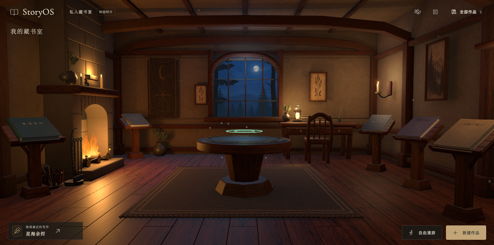
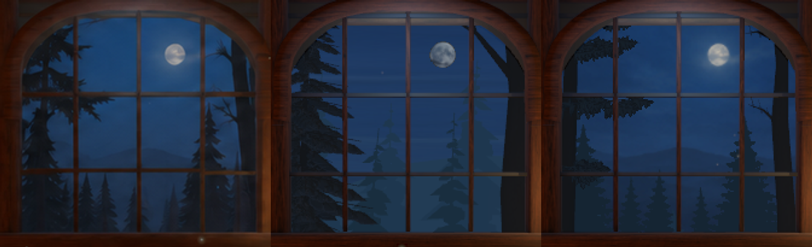

<!doctype html><html lang="zh-CN"><meta charset="utf-8"><meta name="viewport" content="width=device-width,initial-scale=1"><title>月夜深林 · 样稿与实景对照</title><style>body{margin:0;background:#151719;color:#e5e2db;font:16px/1.6 system-ui,sans-serif}main{max-width:1600px;margin:auto;padding:28px}h1{font-size:25px;font-weight:550;margin:0 0 6px}p{color:#acb5bb}a{color:#e4c997}.pair{display:grid;grid-template-columns:1fr 1fr;gap:18px}figure{margin:0}figcaption{margin:12px 0 8px}img{width:100%;display:block}.labels{display:grid;grid-template-columns:repeat(3,1fr);margin-top:30px;color:#c5cace}.labels span{text-align:center}footer{margin:25px 0}@media(max-width:750px){main{padding:15px}.pair{grid-template-columns:1fr}}</style><main><h1>月夜深林 · 样稿与实景</h1><p>同一首页构图。左侧是已认可样稿，右侧是修正版 Chrome 实拍。</p><div class="pair"><figure><figcaption>已认可样稿</figcaption></figure><figure><figcaption>修正版 · 真实运行画面</figcaption></figure></div><div class="labels"><span>已认可样稿</span><span>被否定的首版</span><span>修正版实拍</span></div><footer><a href="http://127.0.0.1:4173/">进入五书实景，体验靠窗与左右漫游 →</a></footer></main></html>
